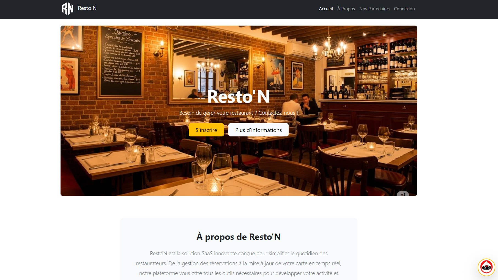

Étudiant à l'IUT de Reims, je valorise, administre et exploite les données pour en faire des leviers de décision.
De la donnée brute à la décision éclairée.
Étudiant en 3e année de BUT Informatique à l'IUT de Reims, parcours Administration, Gestion et Exploitation des Données, je maîtrise la chaîne complète de valorisation de la donnée : modélisation, SQL avancé, automatisation de flux et restitution visuelle.
Lors de mon stage de 12 semaines chez Econox Production, j'ai conçu en autonomie un tableau de bord Power BI de pilotage d'atelier, alimenté par l'ERP de l'entreprise, avec des indicateurs prédictifs de délais en DAX.
Rigoureux, autonome et force de proposition, je recherche un stage de 14 à 16 semaines dès janvier 2027 ou une alternance pour contribuer à des projets décisionnels concrets.
Power BISQLPythonDAXOracleSymfonyPandasJavaScriptPower QueryPostgreSQLDockerPHPReactGitPower BISQLPythonDAXOracleSymfonyPandasJavaScriptPower QueryPostgreSQLDockerPHPReactGit
Les chroniques
Expérience & formation
Avril – Juin 2026◆ Stage · 12 sem.
Stage Business Intelligence & Data
Econox Production · tôlerie industrielle
Conception en autonomie d'un tableau de bord Power BI de pilotage d'atelier (découpage laser, pliage, peinture) : stocks, production, commandes.
Modélisation d'indicateurs prédictifs de délais en DAX avec paramètres de simulation interactifs.
Extraction des données depuis l'ERP et fiabilisation des flux de données brutes.
Power BIDAXPower QueryERPSQL
2024 — 2027◆ En cours
BUT Informatique — Parcours Data
IUT de Reims-Châlons-Charleville · Université de Reims Champagne-Ardenne
Parcours Administration, Gestion et Exploitation des Données : gouvernance et modélisation des données, Business Intelligence, développement full-stack et conduite de projets agiles.
2024◆ Diplômé
Baccalauréat Technologique STI2D
Lycée Saint Jean-Baptiste de La Salle · Reims
Spécialité Systèmes d'Information et Numérique (SIN) : premiers pas en programmation, architectures logicielles et réseaux.
Quêtes accomplies
Projets phares
Une sélection de réalisations, de l'entreprise à l'université.
◆ Légendaire01
Stage · 12 semaines · Avril – Juin 2026
Econox Production — Tableau de bord Power BI de pilotage d'atelier
Conception en autonomie d'un outil décisionnel pour une entreprise de tôlerie industrielle : de l'extraction des données de l'ERP jusqu'aux tableaux de bord utilisés par la direction et les ateliers.
Pilotage d'atelier : suivi des stocks, de la production et des commandes sur les postes découpage laser, pliage et peinture.
Indicateurs prédictifs : modélisation de délais en DAX avec paramètres de simulation interactifs.
Fiabilisation des flux : extraction depuis l'ERP, nettoyage Power Query et modélisation décisionnelle.
Power BIDAXPower QueryERPSQLModélisation

◆ Épique03
SAÉ 3.01 · Équipe de 5
Resto'N — Application de gestion de restaurant
Application full-stack couvrant tout le quotidien d'un restaurant : réservations, prise de commandes, gestion des stocks en temps réel et reporting pour le propriétaire.
Base de données : modèle relationnel garantissant la cohérence stocks / commandes (Doctrine ORM).
Rôles : espaces propriétaire et serveur avec permissions dédiées.
Reporting : module d'analyse des ventes pour le pilotage de l'établissement.